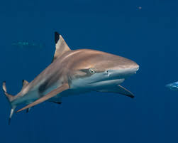
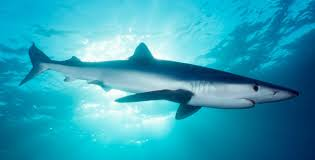
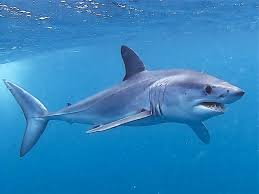
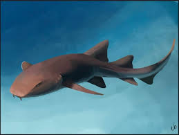
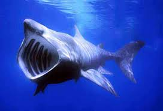

Tiburón blanco
- Características: Depredador más grande del mundo, con cuerpos robustos y dientes triangulares y serrados.
- Tamaño: Puede superar los 6 metros.
- Dieta: Mamíferos marinos (focas, leones marinos), tortugas y peces grandes.
- Hábitat: Aguas costeras y templadas de casi todos los océanos principales.
- Dato Curioso: Famoso por sus migraciones transoceánicas y su reputación como superdepredador.

Tiburón Tigre
- Características: Recibe su nombre por las rayas oscuras (similares a las de un tigre) que se desvanecen con la edad. Gran capacidad de mimetismo.
- Tamaño: Alcanza típicamente 3.5 a 4.5 metros.
- Dieta: Considerado un carroñero oportunista; come peces, tortugas marinas, aves, delfines e incluso basura.
- Hábitat: Aguas costeras y templadas de casi todos los océanos principales.

Tiburón Ballena
- Características: Es el pez más grande del mundo. Posee un patrón único de manchas blancas y grises, como una huella dactilar.
- Tamaño: Puede superar los 18 metros.
- Dieta: Exclusivamente filtrador, alimentándose de plancton, pequeños crustáceos y peces diminutos.
- Hábitat: Aguas tropicales y templadas cálidas en mar abierto.
- Dato Curioso: Es completamente inofensivo para los humanos.

Tiburón Martillo
- Características: Inconfundible por su cabeza aplanada y ancha en forma de martillo (cefalofolio). Esto mejora su visión y la detección eléctrica.
- Tamaño: La especie lisa puede alcanzar hasta 4.2 metros.
- Dieta: Principalmente peces, cefalópodos y, notablemente, rayas, a las que inmoviliza con su cabeza.
- Hábitat: Costas templadas y tropicales, a menudo se reúnen en grandes cardúmenes.

Tiburón Toro
- Características: Inconfundible por su cabeza aplanada y ancha en forma de martillo (cefalofolio). Esto mejora su visión y la detección eléctrica.
- Tamaño: La especie lisa puede alcanzar hasta 4.2 metros.
- Dieta: Principalmente peces, cefalópodos y, notablemente, rayas, a las que inmoviliza con su cabeza.
- Hábitat: Costas templadas y tropicales, a menudo se reúnen en grandes cardúmenes.

Tiburón Azul
- Características: Esbelto y alargado con grandes ojos y un llamativo color azul índigo en el dorso.
- Tamaño: Puede alcanzar más de 3.5 metros.
- Dieta: Principalmente peces pequeños y calamares.
- Hábitat: Aguas pelágicas (mar abierto) y profundas de todo el mundo.
- Dato Curioso: Es una de las especies de tiburones más migratorias, recorriendo grandes distancias.

Tiburón Mako o Marrajo Común
- Características: Considerado el tiburón más rápido del mundo, con un cuerpo aerodinámico y dientes largos y puntiagudos visibles.
- Tamaño: Generalmente entre 3 y 4 metros.
- Dieta: Peces pelágicos rápidos como atunes, peces espada y otros cefalópodos.
- Hábitat: Aguas abiertas, tropicales y templadas.

Tiburón Nodriza
- Características: Tiburón bentónico (de fondo), de movimiento lento, con una cabeza ancha y pequeños barbillones cerca de la nariz.
- Tamaño: Promedia 2.5 a 3 metros.
- Dieta: Se alimenta por succión de pequeños invertebrados (caracoles, cangrejos) y peces que viven en el fondo.
- Hábitat: Arrecifes, zonas rocosas y fondos arenosos de aguas tropicales y subtropicales poco profundas.

Tiburón Zorro o Coleto
- Características: Fácilmente identificable por su aleta caudal superior extremadamente larga, que puede ser tan larga como el resto de su cuerpo.
- Tamaño: Puede alcanzar hasta 5.5 metros (incluyendo su larga cola).
- Dieta: Utiliza su cola como un látigo para aturdir a bancos de peces (sardinas, caballas) antes de devorarlos.
- Hábitat: Aguas oceánicas templadas y tropicales.

Tiburón Peregrino
- Características: El segundo pez más grande del mundo, con una boca enorme que abre para alimentarse. Es un nadador lento.
- Tamaño: Alcanza hasta 12 metros o más.
- Dieta: Es filtrador, alimentándose exclusivamente de plancton.
- Hábitat: Aguas templadas de todo el mundo, a menudo cerca de la superficie, donde el plancton es abundante.
- Dato Curioso: Se les ve "asoleándose" o nadando lentamente cerca de la superficie del agua.